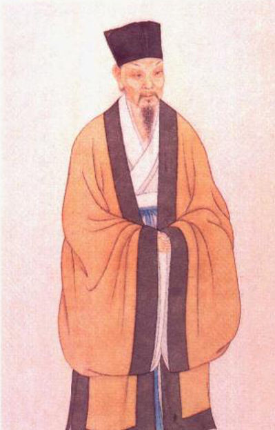

苏东坡
苏轼（1037－1101），北宋文学家、书画家、美食家。字子瞻，号东坡居士。汉族，四川人，葬于颍昌（今河南省平顶山市郏县）。
一生仕途坎坷，学识渊博，天资极高，诗文书画皆精。其文汪洋恣肆，明白畅达，与欧阳修并称欧苏，为“唐宋八大家”之一；诗清新豪健，善用夸张、比喻，艺术表现独具风格，与黄庭坚并称苏黄；词开豪放一派，对后世有巨大影响，与辛弃疾并称苏辛；
书法擅长行书、楷书，能自创新意，用笔丰腴跌宕，有天真烂漫之趣，与黄庭坚、米芾、蔡襄并称宋四家；画学文同，论画主张神似，提倡“士人画”。著有《苏东坡全集》和《东坡乐府》等。
作品列表 4首诗
| 诗歌标题 | |
|---|---|
| 1 | 浣溪沙·山色横侵蘸晕霞 |
| 2 | 海棠 |
| 3 | 临江仙·送钱穆父 |
| 4 | 和董传留别 |
| 5 | ... |